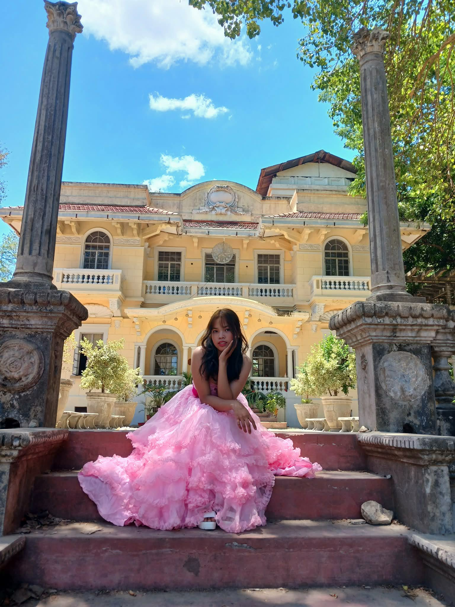

When I was a child, my dreams were wonderful — I wanted to be in criminology, but things changed when I didn't pass the entrance exam at NEUST. So I decided to enroll at Araullo University, and chose BSIT as my course.
I am currently a first-year college student at Araullo University. As a BSIT student, I combine what I learn in school with real-world experience to grow my knowledge and skills in the IT field. Being a beginner, I know there is still so much for me to learn, but I enjoy every step of the journey.
What excites me most is turning simple ideas into real projects that can inspire and help others. As I continue to study and practice, my goal is to sharpen my skills in web development and programming.
From being a BSIT student who is an extrovert and always laughing, even when things don't make sense — I love meeting new people, making conversations fun, and bringing good vibes wherever I go. I can code, but I'm better at making people laugh. I'm still figuring life out, but one thing's for sure: I bring energy, positivity, and good vibes in everything I do.